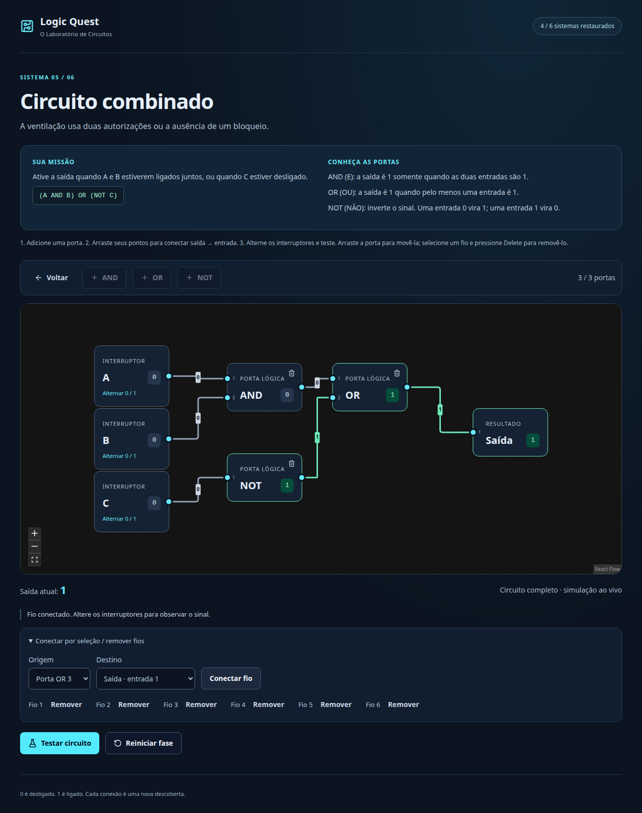

Logic Quest
Aprender lógica digital montando, experimentando e verificando circuitos.
Uma missão: restaurar o laboratório, um circuito de cada vez.
Equipe, instituição e disciplina: dados ainda não fornecidos. Roteiro total: 23 minutos, incluindo 5 de demonstração.
Da tabela ao circuito
Lacuna proposta
Memorizar tabelas-verdade pode não explicar como os sinais atravessam portas combinadas.
O público proposto são estudantes iniciantes em lógica digital.
Experimentação
Alterar uma entrada, acompanhar os fios e confrontar o resultado com o objetivo.
Com A=1 e B=1: AND=1, OR=1, XOR=0.
Hipótese motivadora. Não houve entrevistas, questionário aplicado ou estudo de aprendizagem.
Um laboratório acessível no navegador
Objetivos
- Reconhecer AND, OR, NOT e XOR.
- Compreender composição e sinais.
- Corrigir soluções com contraexemplos.
MVP entregue
- Menu, fases, editor e sucesso.
- Montagem e simulação ao vivo.
- Tabela completa e progresso local.
Sem backend, login, ranking, multiplayer, editor de fases ou circuitos com memória.
Etapas com entregas verificadas
Escopo → ambiente → motor → editor → validação → fases → interface → persistência → revisão → materiais.
Requisitos centrais
RF003: editar portas. RF007: testar 2ⁿ combinações. RF010: recuperar progresso.
RNF001: execução local. RNF003: confiabilidade lógica.
Casos de uso
Selecionar fase, montar circuito, simular, validar e consultar progresso.
Commits reais por etapa, com tipos, lint, testes e build.
Seis desafios, dificuldade progressiva
| Fase | Sistema | Comportamento esperado |
|---|---|---|
| 1 | Gerador | A AND B |
| 2 | Porta de emergência | A OR B |
| 3 | Alarme | NOT A |
| 4 | Fechadura | A XOR B |
| 5 | Ventilação | (A AND B) OR (NOT C) |
| 6 | Controle central | ((A XOR B) AND C) OR (NOT D) |
Contexto, instrução, portas permitidas, limites e sucesso definidos em dados. Entradas e saída permanecem fixas.
Regras separadas da interface
Interface
React + TypeScript + Vite
XYFlow · Tailwind · Button shadcn/ui · Lucide
Montagem, navegação e feedback
Domínio
Portas puras e grafo
Validação completa e fases declarativas
Sem React, DOM, eval ou código do jogador
Progresso
localStorage versionado
Conquistas e última fase
Falhas tratadas sem impedir o jogo
Vitest verifica regras. Playwright exercita o build de produção no navegador. Não há servidor de negócio.
Uma configuração correta não basta
Simulação
Mostra a configuração atual dos interruptores.
Ordenação topológica detecta ciclos; sinais incompletos aparecem como ?.
Validação
Testa todas as 2ⁿ combinações. Na fase 6: 2⁴ = 16.
Verifica restrições e aceita soluções logicamente equivalentes.
Objetivo AND, fio A→saída: 00 parece certo. Mas A=1 e B=0 produz 1 quando o esperado é 0.
Integração guiada por testes
| Problema encontrado | Solução aplicada |
|---|---|
| Medição de nós sobrescrevia montagem | Separar metadados visuais e alterações do circuito. |
| Storage bloqueado, cheio ou inválido | Validar versão/dados, fallback e aviso. |
| Foco após fechar confirmação | Manter Tab no diálogo; restaurar após remover inert. |
| Downloads e servidor restritos no ambiente | Instalação temporária e execução autorizada fora do sandbox. |
Cada correção relevante foi conferida com testes ou revisão visual; sem ampliar o escopo do jogo.
Do motor ao percurso completo
Testes unitários
Portas, grafos, equivalência, seis fases, edição e progresso.
Testes de navegador do jogo
Build de produção, arraste, teclado, reinícios, reload e seis fases offline após carregar.
Instalação pelo lockfile, tipos, lint e build passaram em 13/10/2026.
Chromium no Linux; revisão visual em 1280 px e 390 px. Testes técnicos não comprovam eficácia pedagógica. Evidências
Vamos restaurar o laboratório
- Fase 1: erro proposital e contraexemplo.
- Correção com AND e tabela aprovada.
- Fase 5: combinar AND, NOT e OR.
- Recarregar e conferir conquistas.
Servidor preview deve estar ativo; fases 1–4 concluídas no navegador da demonstração.

Produto testado, limites explícitos
Entregue
Jogo, código, testes, README, requisitos, decisões, capturas e slides locais.
Roteiro de 23 minutos com demonstração de cinco.
Pendente de dados reais
Modelo .docx, equipe, instituição, docente e aprovações.
Termo final não gerado. Não houve estudo com estudantes.
Montagens duram a sessão. Progresso por perfil/origem, sem sincronização. Revisão em Chromium, sem certificação de acessibilidade. Dados preparados para o Termo · Roteiro completo